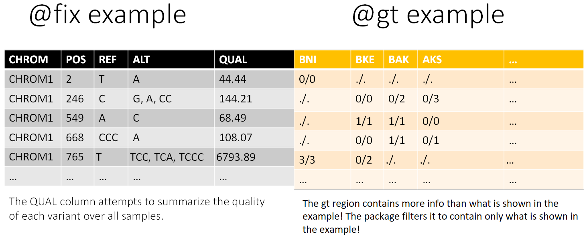

General
1) General.RmdMotivation
The aim of Genome‐wide association studies (GWAS) is to identify single nucleotide polymorphisms (SNPs) of which the allele frequencies vary systematically as a function of phenotypic trait values.
Identification of trait‐associated SNPs may subsequently reveal new insights into the biological mechanisms underlying these phenotypes.
VCF files are big, commonly used, genetic files and working with them might be complicated. More information on VCF format below.
The main package used here for loading the vcf file is “vcfR”
Usage
If a server with stronger computation is available, it is required to run most of the functions on it (especially chapter 1).
For now, the R markdown files that show how to use the package step by step (chapter 1 and chapter 2) aren’t publicly available. You can send an email the maintainer of the package
For Weizmann institute users: The package is recommended to be executed on the WEXAC R server. All the required packages are installed on R 4.1.1 so this is recommended. As for plotting, there are some issues with the WEXAC server so save the files and run the plots and pdf creations from your computer (unless you know how to save it)
Installing the package
if(!require("devtools")){install.packages("devtools")}
devtools::install_github("TomerAntman/VCFtoGWAS") Output structure
## levelName
## 1 Results
## 2 ¦--Chapter1-VCF2GWAS
## 3 ¦ °--Step1.1-Upload_VCF
## 4 ¦ ¦--fix_sub.RDS
## 5 ¦ ¦--gt_GTonly.RDS
## 6 ¦ °--Step1.2-Filter_genotypes
## 7 ¦ ¦--fix_filt.RDS
## 8 ¦ ¦--gt_GTonly_filt.RDS
## 9 ¦ °--Step1.3-Expand
## 10 ¦ ¦--fix_filt_expand.RDS
## 11 ¦ ¦--indication.RDS
## 12 ¦ ¦--gt_GTonly_filt_expand.RDS
## 13 ¦ °--Step1.4-GWAS_Matrix
## 14 ¦ ¦--mapping_info.RDS
## 15 ¦ ¦--GWAS_mat.RDS
## 16 ¦ ¦--phenotypes.csv
## 17 ¦ ¦--offspring_GWAS_mat.RDS
## 18 ¦ °--offspring_phenotypes.csv
## 19 °--Chapter2-Analysis
## 20 °--Step2.1-Create_gData
## 21 ¦--gData.RDS
## 22 °--Step2.2-Single_Trait_GWAS
## 23 ¦--GWAS_Result.RDS
## 24 ¦--Significant_SNPs_information.csv
## 25 °--complete_results_plots.pdfVCF info
VCF (Variant Call Format) is a text file format (most likely stored in a compressed manner). It contains meta-information lines, a header line, and then data lines each containing information about a position in the genome. The format also has the ability to contain genotype information on samples for each position. For more info, I suggest reading the VCF File-format specifications by samtools or Reading VCF data by BJ Knaus, JF Tabima and NJ Grünwald.
The cartoon below also demonstrates the division of a VCF file into 3 sections:
1. Meta information (@meta): containing information about the file, its creation, as well as information needed to interpert abbreviations used elsewhere in the file.
2. Fixed information (@fix): containing information for each variant (SNP or INDEL).
3. Genotype information (@gt): containing information about each variant for each sample (such as “strain” or “individual”)

VCF Cartoon
A demonstration of how the results appear in the code (as the VCF is loaded using the vcfR package):

R cheats and tips
RDS
The easiest way to save file for further use in R is by saving them as “.RDS” files (I saw there are python packages for reading RDS files but haven’t tried).
All you need to do to save is run:
saveRDS(some_object, "some_path/some_object.RDS")All you need to do to load is run:
some_object = readRDS("some_path/some_object.RDS")Sometimes when reading an RDS file it is uploaded as a list containing the desired object.
If that happens, run:
some_object = readRDS("some_path/some_object.RDS")[[1]]Paths
There is an issue with directories in R. It accepts only forward slashes in paths (/).
A cool cheat around this is to copy the full file path (you can use Shift + Right click on a file which opens a menu with the “Copy as path” option) and then run the following line (in some constellation):
gsub('"',"",gsub("\\\\\\\\","/",readClipboard()))For example, what I did is put it into a function in the beginning of markdown like this:
paste_directory<-function(){gsub('"',"",gsub("\\\\\\\\","/",readClipboard()))}And then every time I copy the directory and just write in the Rstudio console: paste_directory()
Common error
Error: cannot allocate vector of size ...
The solution is increasing the memory limit by running memory.limit() to check the current limitation and then increasing it by memory.limit(size = ...)